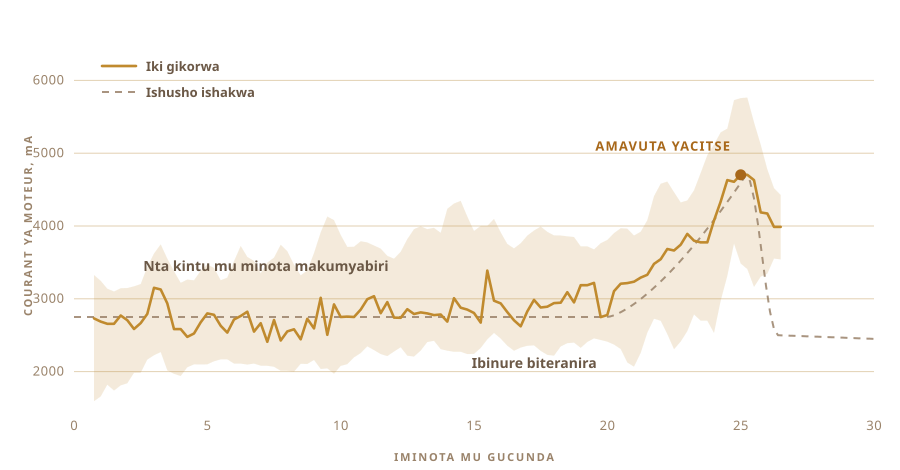

01
Nari nayiriye gusa
Ghee nzi yavaga mu byaro bya Nepal. Mu macupa yongeye gukoreshwa, yahoze ari ay'ikindi kintu. Abayikoraga bamaze igihe kirekire cyane bayikora kimwe, ku buryo ntawe wo aho uyifata nk'ubuhanga bwihariye.
Uburyohe bwayo ntibusa na gato n'ubw'iyo bagurisha mu mabati yo mu maduka.
Jye ubwanjye, nta na rimwe nari nayikoze. Sinari nzi igihe amata agomba kumara ngo abe ikivuguto, cyangwa ubukonje bukwiye, cyangwa ijwi inkono igira igihe byahiye.
02
Icyo uruganda rusimbuka
Ghee nyinshi ikorwa mu nganda itangira kuri crème, igahita ijya ku muriro. Nta kivuguto. Nta joro ryo gutegereza.
Uburyo gakondo butangira umunsi umwe cyangwa ibiri mbere. Amata atetswe kugeza abyimbye, hanyuma avugushwa akarara.
Kuri twe ibi ntibisobanurwa. Ikivuguto ni ikintu gisanzwe. Ikidasanzwe ni ghee itabanje kuba ikivuguto.
Kandi ni ngombwa. Niba ukuyemo ukwo kuvugusha, ibivamo ni amavuta ashongeshejwe gusa. Ni meza, ariko si ghee.

03
Iminsi ibiri ku meza
Amata ashyushye gake, ikiyiko cy'ikivuguto cy'ejo, uvange, hanyuma ubireke. Ibisigaye ni akazi ka bagiteri. Jye nabiretse iminsi ibiri yose.
Uko bigenda urabizi. Bagiteri nzima, Lactobacillus ahanini, zirya isukari yo mu mata zikayihindura acide lactique. Amata abyimba. Arasharira. Bukeye ni ikindi kintu.
Ibyo abantu batavuga cyane ni ibyiza byose biva aho. Lactose ivunitse, bityo yoroha kugogorwa. Ibinure na proteyine binjira mu mubiri bitagoranye. Hariho na acide butyrique, acide y'ibinure ngufi igaburira uruhu rw'imbere mu mara, kandi ghee ikozwe uku irimo nyinshi kurusha iyavuye mu crème itavuguswe.
Ubuvuzi bwa Ayurveda bumaze igihe kirekire cyane busaba ubu buryo nyine.
Icyo nshobora kuvuga jye ni iki. Ikivuguto ni cyo kiresa impumuro. Kandi iyo mpumuro ni yo mpamvu nyamukuru yo kwikoreza uwo murimo wose.

04
Uburyo bufite izina
Bilona. Ni izina ry'uburyo bwo mu Nepal. Icyo bakora ni gucunda, nk'ukundi. Ikivuguto mu nkono, igicundo cy'ibiti kimanukamo, hanyuma ukabizunguza, ujya ugaruka, kugeza amavuta avuyemo akazamuka. Nta gisabo. Nta kubihindagura mu maboko. Inkono igumaho, ibiti bizenguruka.
Igicundo nagikoze jyewe. Ibyo nabonaga kuri interineti byose byari byafatanyishijwe n'ibomo, kandi nta n'umwe wambwiraga ubwoko bw'ibomo. Icyo kintu kimara igice cy'isaha kiri mu biryo byanjye, ntabwo nashoboraga kugenda nkeka. Ibiti bikomeye, vis za inox, byose bifatanye ku cyuma cyo kuvanga nari nsanganywe mu tiroire.
Amaboko ane, n'umukandara w'icyuma uyafata agororotse. Byose bifatanye vis, bityo nshobora kongera kubitandukanya.


Bimara nk'igice cy'isaha, kandi igice kinini cyabyo nta kintu kibaho. Umuntu wese wafashe igisabo azi uko amaboko aremerera mbere y'uko ikintu kigaragara. Ni ako kazi uhora wifuza ko undi yagakora.

05
Nuko ndabaza
Abantu bazi gukora ibi ntabwo bakurikiza inyandiko, kandi nta n'umwe wari mu gikoni cyanjye. Ni cyo gituma ibibazo byajyanye mu idirishya rya chat.
Igihe cyo kuvugusha. Ubukonje bwo kugumisha ikivuguto. Umuvuduko ntarengwa, mbere y'uko inkono ishyuha ikangiza amavuta. Igisubizo cyose cyafunguraga ibindi bibazo bitatu.
Hanyuma mbaza icyo nari nshaka kubaza koko. Wowe, wabikora?
Ikibazo ntikiri ukuntu nkora ghee. Cyabaye ukuntu wayikora ku bwanjye.
06
The Beast
Perceuse ya batiri. Igicundo cyavuye mu tiroire no mu iduka ry'ibikoresho. Agasanduku ka plastiki k'ibiryo karimo électronique, urubaho rw'igikoni rukora nk'umugongo, na buto nini y'umuhondo ihagarika byose, kuko ikintu cyose gifite moteur kigomba kugira iyo.
Nta mafaranga menshi yabirimo, biragaragara, kandi ni na byo nashakaga.

- MoteurPerceuse ya batiri, ifatirijwe
- IgicundoIbiti bikomeye na inox, byakozwe atari byaguzwe
- UbwonkoRaspberry Pi, yandika rimwe kuri segonda
- KumvaCourant ya moteur mu gucunda, sonde y'ubushyuhe mu guteka
- GuhagarikaButo imwe nini, ihujwe ngo ice amashanyarazi
07
Gucunda ni byoroshye
Gucunda ikivuguto, umuntu wese arabishobora. N'ikigoye, kumenya igihe cyo guhagarara, abantu benshi barakizi. Ntibakizi mu magambo, bakizi mu kuboko.
Uhagaritse hakiri kare, usigarana ifuro rinini. Urenzeho igihe, amavuta ugasubiza mu macunda ukayabura. Icyo gihe nyacyo ntigihoraho kimwe, gihindurwa n'ibinure, n'ubushyuhe, n'uko umunsi uri.
Ntawe ureba isaha. Urumva. Ijwi ryo mu nkono rihinduka, riva ku kuzengurutsa kworoshye rijya ku kwikubita kutaringaniye, ni ho ushyiramo ukuboko.

08
Urwiyumvo rumwe, rwo rwonyine
Nuko mpa imashini urwiyumvo rumwe. Ireba ingufu moteur ikoresha.
Iminota makumyabiri, nta kintu. Charge iguma hafi ya 2700 mA, izamuka ikamanuka gake. Hanyuma ibinure bitangira guteranira, perceuse igomba kunyura mu kintu kiremereye. Igera ku 4700, igumaho akanya, hanyuma amavuta areka amazi, charge iragabanuka.
Nta caméra, nta model, nta bwenge bwinshi. Umubare uzamuka, hanyuma ugwa.

09
Yahagaze ubwayo
Yarakoze. Jye nagiye gukora ikindi kintu, nuko nagarutse nsanga yarazimye ubwayo.
Amavuta y'umuhondo woroheje yacitsemo uduce, tureremba mu macunda atabonerana. Ntawe wayibwiye isaha. Mu rugo iyo nkuru imenywa n'ukuboko n'ugutwi. Aha yamenywe n'umubare umwe gusa, uwo moteur yashoboraga kumva.

10
Hanyuma ni amaboko
Uteranya uduce tw'amavuta ukayafunyafunya ukayagira umupira. Ukayoza mu mazi akonje, kenshi na kenshi, kugeza amazi ava asukuye.
Igitonyanga cyose cy'amacunda usize kizashya mu ntambwe ikurikira. Iyi nyine sinayihaye imashini, kandi ntabwo nabishakaga.


11
Urwiyumvo rwa kabiri
Charge ya moteur ni yo yabwiye rig igihe cyo guhagarara. Guteka ni ikindi kibazo. Ubu ntabwo ushaka akanya, ushaka kugumisha urugero.
Nuko inkono ijya kuri réchaud ifite sonde y'ubushyuhe imbere, hamwe na régulateur ya AC icana réchaud ikayizimya ngo umubare ugume aho wawushyize. Nawushyize kuri 250 F, nuko ugumaho nk'isaha imwe.
Umuntu ureba inkono isaha yose ajya ahandi mu bwenge. Régulateur ntiyirambirwa.

12
Isaha yose ureba ibara
Amavuta mu nkono, hanyuma hafi ya byose bikorwa ubwabyo.
Arashonga. Hazamuka ifuro ryera rivuga cyane. Amazi arashira, urusaku rugenda ruhwera. Ibisigazwa by'amata bimanuka birahiya, impumuro ihinduka, ireka iy'amavuta, isa n'ikintu cyokejwe. Inkono iraceceka, amazi aba abonerana, birangiye.
Narebye igice kinini cyabyo, kuko ni byiza kubireba, ariko nta kintu nakoze cyahinduye uko byavuyemo.


13
Ghee
Irabonerana, ni umuhondo wijimye, kandi inuka nk'amacupa nakuriye ndyamo. Ni cyo kizamini cyonyine nari mfite, nuko iratsinda.

Yinjiye mu macupa ikiri ishyushye kandi ibonerana. Ntabwo ari intsimbo, ni amacupa y'ikirahuri. Bukeye yari yafashe, yoroheje mu ibara kandi ifite utuntu duto.
Nashyizeho étiquette. Ijambo riri kuri yo ni ghee mu kinyanepali, naho code iri iruhande ikugarura kuri uru rupapuro.

Ni ubwa mbere nkoze ghee mu buzima bwanjye. Kandi mu by'ukuri si jye wayikoze.
14
Amacupa icyenda ubwa kabiri
Ubwa mbere habonetse amacupa abiri, ni byo byose. Ubu bwo urubaho rwaruzuye.
Amacupa icyenda. Abiri maremare, impfundikizo zizingwa, hafi ya caméra. Atandatu afunga clip, mu gati. N'agato kamwe hepfo ku nkingi ya kure.

Étiquette yahindutse. Amacupa abiri ya mbere yari afite iy'impapuro ya pinki, hejuru handitseho OUR STORY. Aya ni film ibonerana, bityo ghee igaragara inyuma y'inyuguti, kandi code iri iruhande iracyakugarura kuri uru rupapuro.


Yafashe mu muhondo woroheje nk'uwa mbere, ikintu nari ntazi neza ko kizaba.
15
Icyo nshaka ubutaha
Ubu imashini izi ibintu bibiri. Igihe cyo guhagarika gucunda, n'ubushyuhe bwo kugumisha.
Ubutaha nshaka kuyiha amaso n'amatwi. Caméra, ngo yirebere ifuro rishira n'ibisigazwa bihiya, hanyuma ihitemo ubushyuhe ubwayo aho kugumisha umubare nayihaye. Na micro, kuko ibyinshi bibwira umuntu ko ghee yahiye ni inkono iceceka.
Perceuse ishobora no kongera akazi ka kabiri. Amavuta amaze kuba mu nkono asaba kuvangwa, kandi moteur iri aho iryamye nta kintu ikora.
Hanyuma, uruziga. Uhindura igihe cyo kuvugusha, uhindura umuvuduko, usogongera ku byavuyemo, ugumana ibyakoze neza, ugasubira. Inshuro mirongo itatu, maze yagera ahantu jye ntari kwibwira kureba.
Nanjye ubwanjye nta na rimwe nari nzi neza aho nareba.
Icyo igizwemo, aho kumva gukorerwa, n'icyo rig ireba koko.